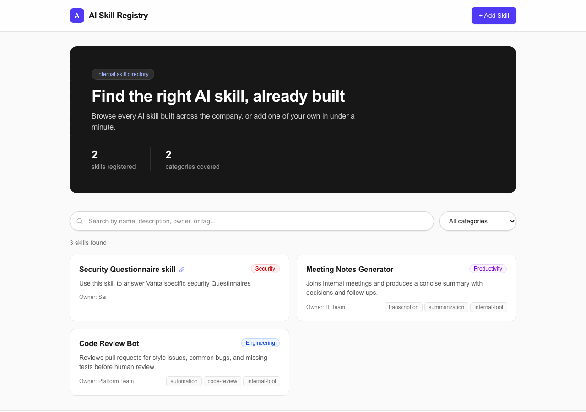
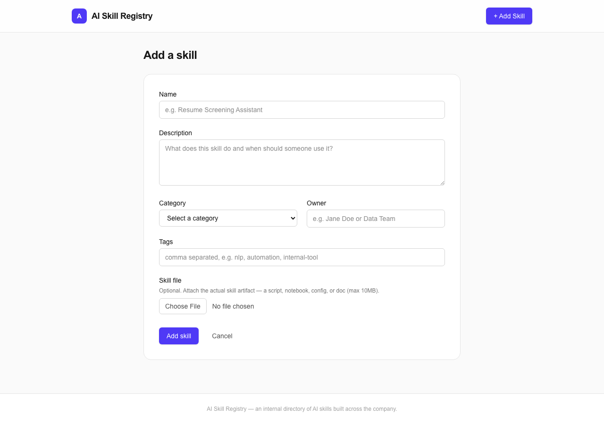
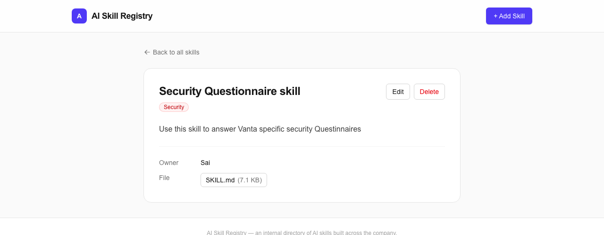
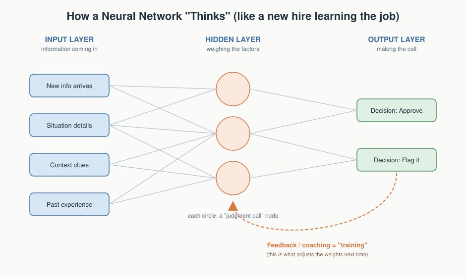
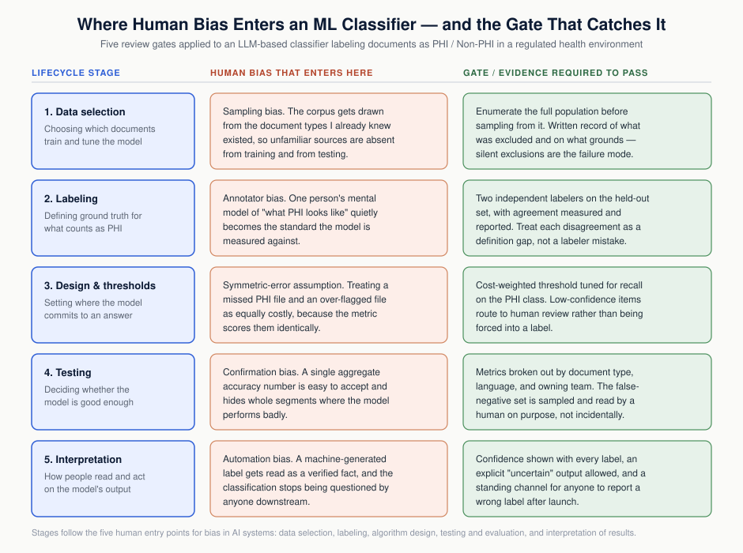
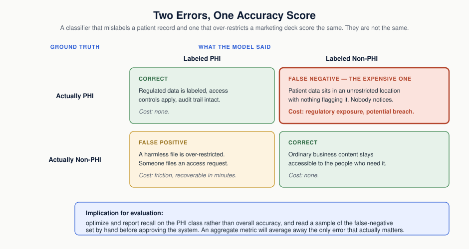

Artifacts
Artifact 1
AI LabDesign Thinking
Vendor Security Questionnaire Generator: An AI-Built Compliance Tool
Introduction. As part of the AIML-500 AI Lab, I designed and built an interactive AI tool that generates vendor security due-diligence questions grounded in real compliance frameworks (SOC 2, ISO 27001, HIPAA). The project combined my background in security engineering with a structured design-thinking process to build something a security or GRC team could actually use.
Description. The tool walks a user through four steps — how many questions they want (5–15), which compliance framework to assess against, which security domain to focus on (e.g., network security, access control, incident response), and an optional paste of an existing vendor document — before generating specific, citation-backed questions to send to a vendor during a security review.
The Tool in Action
Vendor Security Questionnaire Generator
Hi — let's build your vendor security questionnaire.
Tell me a few things and I'll generate specific, framework-grounded questions you can send to a vendor during a security review — no invented controls, no assumptions about their environment.
Get started
Landing screen — sets expectations before any input is collected.
Vendor Security Questionnaire Generator
STEP 2 OF 4
Which framework are you assessing readiness against?
SOC 2Trust Service Criteria: security, availability, confidentiality, etc.
ISO 27001Annex A control set for information security management
HIPAASecurity Rule safeguards for protected health information
Step 2 of 4 — framework picker. HIPAA selected for the test scenario.
Vendor Security Questionnaire Generator
HIPAAIncident Response5 questions
Your vendor security questions
1What documented incident response procedures does your organization have that specify roles, responsibilities, and timelines for detecting, responding to, and mitigating suspected or confirmed security incidents involving unsecured PHI, as required by 45 CFR § 164.308(a)(6)?
2How does your organization ensure that individuals affected by a breach of unsecured PHI are notified without unreasonable delay and within 60 calendar days of discovery, as specified in 45 CFR § 164.404(b)?
3What procedures does your organization follow to investigate security incidents, document investigation findings, and track remediation actions, consistent with 45 CFR § 164.308(a)(6)?
4What contingency planning and business continuity procedures does your organization maintain to restore critical operations and protect PHI following a security incident, as required by 45 CFR § 164.308(a)(7)?
5What is your organization's process for determining whether a breach requires notification to the HHS Secretary, and how do you ensure timely reporting for breaches affecting 500+ individuals per 45 CFR § 164.408?
Results screen from the test scenario — all five questions cite real HIPAA Security Rule safeguards.
Objective
The objective was twofold: practice the full design-thinking cycle (Empathy → Problem → Ideation → Prototype → Test) on a real build rather than a hypothetical, and produce a tool that solves an actual problem I encounter as a security engineer — vendor questionnaires that are often generic or invent requirements that don't exist in the actual framework.
Process
Before writing a single line of the bot, I answered ten planning questions covering its objective, knowledge boundaries, and guardrails. Key constraints I set:
- Only use real framework language — SOC 2 Trust Service Criteria, ISO 27001 Annex A, or the HIPAA Security Rule — never invented controls.
- Never assume facts about a specific vendor's environment, and never imply a compliance verdict.
- Guide the user through multiple-choice steps rather than a free-form chat.
I deliberately deviated from the lab's suggested no-code builders (Chatbase, Mizou, ChatGPT's custom GPT builder) and built the tool directly with Claude inside Cowork instead, since it needed to call a live LLM to generate real questions at request time rather than return canned text. Because Claude was the build tool, I reviewed Anthropic's Consumer Terms and Privacy Policy in place of a no-code platform's terms of service.
Test scenario: HIPAA framework, "Incident Response" focus, 5 questions requested. The bot returned five questions, each tied to a real, correctly cited HIPAA Security Rule safeguard (45 CFR §164.308(a)(6), §164.404(b), §164.308(a)(7), §164.408) — with no invented controls and no compliance verdict, meeting the success criteria defined during planning.
Tools and Technologies Used
- Claude (built and hosted as an interactive Cowork artifact, calling a live LLM at runtime)
- Design-thinking framework (Empathy → Problem → Ideation → Prototype → Test)
- HIPAA Security Rule, SOC 2 Trust Service Criteria, ISO 27001 Annex A — as grounding sources
- Anthropic Consumer Terms of Service and Privacy Policy (reviewed as part of the build process)
Value Proposition
This artifact shows I can translate regulatory and compliance frameworks into a working, guardrailed AI tool — not just describe security requirements, but build something that enforces them by design.
Unique Value
Unlike a scripted chatbot built on canned responses, this tool calls a live model at runtime and was explicitly constrained during design — no invented controls, no assumptions about a vendor's environment, no compliance verdicts — and validated against a real regulatory citation before calling it done.
Relevance
For an audience evaluating AI/ML and security talent, this artifact is directly relevant: it shows structured problem-solving, current tool fluency, and enough domain knowledge to catch where an AI tool could go wrong and design against it.
References
- HIPAA Security Rule — 45 CFR §164.308(a)(6), §164.404(b), §164.308(a)(7), §164.408
- SOC 2 Trust Service Criteria (AICPA)
- ISO/IEC 27001 Annex A control set
- Anthropic Consumer Terms of Service and Privacy Policy
Artifact 2
AI LabAgentic Coding
AI Skill Registry: An Internal Directory Built with Claude Code
Introduction. For a second AIML-500 AI Lab exercise, I moved from prompting a model inside a chat interface to using Claude Code as an agentic software engineer: I described the product, and Claude Code planned, wrote, and deployed the full application. The result is a live, working web app — ai-registry-app.vercel.app — rather than a document describing one.
Description. The AI Skill Registry is an internal directory where employees can browse every AI skill already built across a company — by name, description, owner, category, or tag — before spending time building a duplicate. Anyone can register a new skill in under a minute: a name, a description, a category, an owner, optional tags, and an optional file attachment (the actual skill artifact, such as a prompt file or config).
The Tool in Action

Homepage — search, filter by category, and browse every registered skill at a glance.

Add-skill form — registering a new skill takes a name, description, category, owner, tags, and an optional file.

Skill detail page — the Security Questionnaire skill I registered myself, with its owner and attached SKILL.md file.
Objective
The objective was to practice directing an agentic coding tool through a real, end-to-end build — planning the data model, generating the UI, and shipping to production — rather than just prompting for text or code snippets. The product problem it solves is real: teams repeatedly build overlapping AI tools because there's no shared place to see what already exists, so this registry gives every team a single searchable source of truth before they start from scratch.
Process
I started the same way as Artifact 1 — defining the objective and constraints before writing anything — but here the constraints were architectural rather than content-based: the registry needed a real database so entries persisted across sessions and users, a searchable/filterable list view, and a lightweight submission flow that any employee could complete without instructions.
I directed Claude Code to scaffold and build a Next.js application backed by Prisma and a Postgres database, then deployed it to Vercel. Working with Claude Code meant iterating at the level of features and screens — "add a category filter," "let a skill entry accept an attached file" — rather than hand-writing each component, while I stayed responsible for reviewing the resulting data model and UI decisions.
Test scenario: I registered my own Security Questionnaire skill (from Artifact 1) as a real entry — name, description, "Security" category, owner, and its SKILL.md file attached — then confirmed it was searchable, filterable by category, and viewable on its own detail page alongside two seeded example skills from other teams.
Tools and Technologies Used
- Claude Code (agentic build: planning, scaffolding, and iterating on the full application)
- Next.js, Prisma, and Postgres for the application and data layer
- Vercel for deployment and hosting
Value Proposition
This artifact shows I can direct an agentic coding tool to ship a real, deployed product — not just generate isolated code snippets — and that I can reason about the product problem (duplicate AI tooling across teams) as clearly as the implementation.
Unique Value
Where Artifact 1 shows me constraining a conversational AI tool's outputs, this artifact shows the complementary skill: directing an agentic tool through a multi-step build with a persistent database and a live deployment, and validating the result against a real end-to-end scenario rather than a single response.
Relevance
For an audience evaluating AI/ML and security talent, this artifact demonstrates current fluency with agentic coding tools — an increasingly core skill — applied to a genuine operational problem: giving a company visibility into the AI tooling it already has before building more.
References
Artifact 3
Communication for LearningAI Explainability
Explaining Neural Networks: Making a Technical Concept Land with a Non-Technical Audience
Introduction. For an AIML-501 workshop activity on communication in change leadership, the challenge was built around Einstein's test — if you can't explain something simply, you don't understand it well enough. The task was to produce the clearest possible explanation of neural networks in machine learning, deliberately applying the lesson's communication-for-learning strategies, and to disclose the AI tools used. For this portfolio I expanded the original discussion post into a reusable stakeholder explainer aimed at a different audience than my classmates.
Description. The artifact is a one-page explainer that teaches how a neural network works through a single sustained analogy: a new employee learning to decide whether to approve or flag incoming requests. The analogy carries all the way through — input layer, hidden layer, output layer, weights, training, and backpropagation — supported by a custom diagram, and it closes on the limitation most simple explanations leave out: that a trained network can't fully explain its own reasoning.
The Artifact in Action
"A neural network is a system that gets better at making decisions the same way a new employee does — by seeing lots of examples and getting corrected when it's wrong."
The opening line of the explainer. Everything after it unpacks this one sentence — progressive disclosure by design.

Custom diagram built for this explainer — labels use the analogy's language ("new info arrives," "judgment call," "feedback / coaching = training") rather than generic ML terminology.
Full explainer: artifact3-explainer.pdf
Objective
The objective was twofold: apply instructional-design principles intentionally rather than incidentally, and use the explanation as a self-test. Explaining a concept without leaning on jargon exposes exactly where your own understanding is thin, which is the point of the Einstein framing.
Process
I made a specific set of design decisions and can defend each one:
- One analogy, committed to. Most explanations of neural networks lose people by switching metaphors partway through — brains, then plumbing, then math. I picked one and carried it to the end, including through the harder concepts.
- Progressive disclosure. The explainer opens with a single-sentence version, then unpacks it. A reader who stops after one line still leaves with something correct.
- Jargon after the concept, never before. "Backpropagation" only appears after the reader already understands the process it names, framed as a label rather than a hurdle.
- Purpose-built visual. Rather than reuse a generic node diagram, I built one whose labels match the analogy, so the picture reinforces the words instead of introducing a second vocabulary.
- Accuracy over tidiness. I kept the black-box limitation in, even though the piece would end more neatly without it. An explanation that leaves a reader falsely confident isn't a good explanation.
Audience customization for this portfolio. The original was written for classmates already in an AI program. The portfolio version is aimed at the audience I actually face at work — executives, compliance reviewers, and clinical partners who need to make decisions about AI systems they don't build. That shift drove real changes: less hedging, a stronger lead, and more weight on the explainability limitation, because that's the part that matters to someone evaluating risk rather than learning the mechanics.
Tool disclosure. I used Claude to draft and refine the explanation and to generate the diagram, then reviewed both myself for technical accuracy — specifically checking that the analogy didn't quietly misrepresent how training works, and that the limitation section survived editing.
Tools and Technologies Used
- Claude (drafting, iterative refinement, and diagram generation)
- Instructional-design principles from the workshop lesson: chunking, progressive disclosure, analogy, visual aids, multimodal presentation
- SVG for the diagram and PDF for distribution
Value Proposition
This artifact shows I can translate a technical machine-learning concept for people who will never read the implementation — the skill that decides whether AI work gets understood, approved, adopted, and governed correctly.
Unique Value
Artifacts 1 and 2 show me building AI systems. This one shows the complementary skill of explaining them, and it demonstrates responsible-AI practice in a concrete way: disclosing tool use, reviewing AI output for accuracy rather than accepting it, and preserving an inconvenient limitation instead of smoothing it away.
Relevance
In security and compliance work, my effectiveness often depends less on finding a technical risk than on explaining it clearly to a non-technical decision-maker who controls the response. This artifact is that same skill applied to machine learning — and as AI systems move into regulated environments, the ability to explain them plainly and honestly becomes part of the compliance burden, not a soft skill alongside it.
References
- AIML-501 workshop lesson on communication for learning and information presentation (chunking, progressive disclosure, visual aids, multimodal delivery)
- Claude (Anthropic) — used for drafting, refinement, and diagram generation, as disclosed above
- Diagram and explainer text are original to this artifact
Artifact 4
AI GovernanceResponsible AI
Bias Review Protocol: Auditing an ML Classifier Before It Touches Regulated Data
Introduction. An AIML-501 discussion assignment asked for a personal value statement on navigating human bias as a leader, plus field-specific strategies for addressing it. My field is security and compliance in a health-data environment, so the strategies I wrote were about auditing machine-learning systems rather than building them. For this portfolio I turned the reflective post into the operational artifact it implied: a pre-deployment bias review protocol that a security or GRC reviewer could actually run against a real system.
Description. The artifact is a one-page protocol built around five gates, one for each point where a human introduces bias into an ML system — data selection, labeling, algorithm design, testing, and interpretation of results. Each gate specifies the question the reviewer must answer, the evidence required to pass it, and the condition that fails it. The reference system throughout is a large-language-model classifier that labels documents as PHI or Non-PHI so that access controls can be applied automatically, which is a case where a wrong label has regulatory consequences rather than cosmetic ones.
The Artifact in Action
"I will treat my own certainty as the least-tested control in the system."
The value statement the protocol is built on. Every control I put in place gets reviewed and documented; my judgment about which controls matter usually does not. That asymmetry is what the five gates are designed to catch.

The five gates — each lifecycle stage paired with the specific human bias that enters there and the evidence a reviewer must see before approving the system.

Why aggregate accuracy is the wrong metric here — a missed PHI file and an over-restricted marketing deck score identically, and only one of them is a reportable event.
Full protocol: artifact4-bias-review-protocol.pdf
Objective
The objective was to move a reflection about bias into something enforceable. A value statement about staying humble is easy to write and impossible to audit. A gate that says a system fails review if only one person defined ground truth, or if nobody has read a false negative, either happened or it did not. I wanted to see whether I could translate an abstract leadership commitment into pass/fail criteria without losing the point of it.
Process
Four decisions shaped the protocol, and I can defend each one:
- Bias located in humans, not in the model. The five gates map to the five points where a person makes a choice — what data to use, how to label it, where to set the threshold, what counts as good enough, and how to read the output. Framing bias as a model property lets everyone off the hook. Framing it as a sequence of human decisions makes it reviewable.
- Every gate demands an artifact, not an assurance. "We considered bias" is not evidence. An exclusion log, an inter-annotator agreement figure, and a hand-read sample of false negatives are. This is the same standard I would apply to any other control in an audit, and there is no reason an ML system should be held to a looser one.
- Asymmetric error costs made explicit. The most common failure I expect in this space is a team reporting high aggregate accuracy on a classifier where the two error types differ by orders of magnitude in consequence. The protocol requires recall on the PHI class and an abstain path for low-confidence items rather than forcing the model to guess.
- Review does not end at approval. The rollout conditions are part of the protocol because the biases that matter most surface after real users meet the system. A team that has been oversold on an AI tool stops reporting its errors, and at that point the bias becomes invisible and permanent.
Audience customization for this portfolio. The original was a discussion post for classmates: reflective, first-person, organized around my own thinking. The portfolio version is written for the audience that would actually receive it at work — an engineering lead defending a launch date, and a compliance reviewer who needs something to sign against. That drove concrete changes: the personal narrative shrank to a single value statement, the strategies became gates with explicit fail conditions, and I added the error-cost matrix because that argument lands with a technical lead far better than a paragraph about confirmation bias does.
Tool disclosure. I used Claude to draft and refine both the original discussion post and this protocol, and to generate the two diagrams. I reviewed the output myself, and the parts that required judgment — which biases actually show up in security review work, where the pass/fail line sits at each gate, and the error-cost position — are mine. The one thing I deliberately did not accept from the model was a tidier ending; a protocol that reads as finished after approval would have contradicted its own last section.
Tools and Technologies Used
- Claude (drafting, iterative refinement, diagram generation, and PDF production)
- The five human entry points for bias in AI systems — data selection, labeling, algorithm design, testing and evaluation, interpretation of results — as the protocol's structure
- Classification-evaluation concepts: precision and recall, confusion-matrix reasoning, per-segment metrics, inter-annotator agreement, confidence thresholds and abstain paths
- SVG for the diagrams and PDF for distribution
Value Proposition
This artifact shows I can evaluate someone else's AI system rather than only build my own — and that I can turn a responsible-AI principle into review criteria with evidence requirements and fail conditions attached, which is what governance actually requires.
Unique Value
Artifacts 1 and 2 show me building AI tools and Artifact 3 shows me explaining one. This artifact shows the fourth competency the first three do not cover: assessing an ML system's fitness before it is trusted with regulated data. It also demonstrates evaluation literacy specifically — reasoning about asymmetric error costs and subgroup performance rather than accepting a single accuracy number — which is the difference between reviewing a model and reading its marketing.
Relevance
AI systems are arriving in regulated environments faster than governance for them is, and someone has to decide whether a given model is safe to point at patient data. In security and compliance work that decision increasingly lands on people with my background rather than on the data scientists who built the model. This artifact is my answer to what that review should consist of, written so that another reviewer could pick it up and run it.
References
- AIML-501 workshop materials on cognitive bias, human bias in AI/ML systems, and change leadership
- NIST SP 1270, Towards a Standard for Identifying and Managing Bias in Artificial Intelligence — consulted for its distinction between human, systemic, and statistical sources of bias
- HIPAA Security Rule and 45 CFR §164.514 (de-identification standard) — the regulatory basis for treating PHI misclassification as a reportable risk rather than a quality issue
- Claude (Anthropic) — used for drafting, refinement, and diagram generation, as disclosed above
- Protocol text and both diagrams are original to this artifact